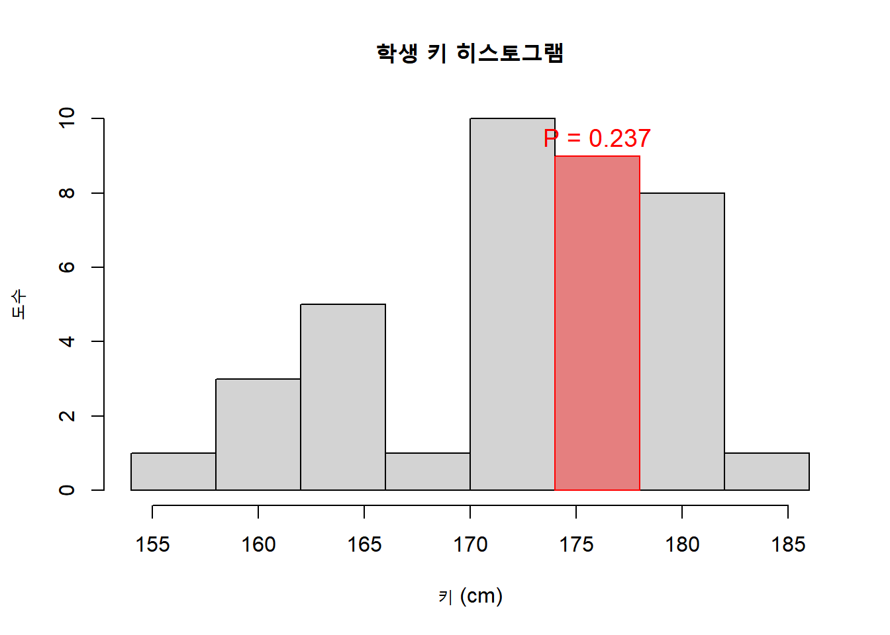

dhyper(x=3, m=49, n=1, k=4)[1] 0.08반도체를 생산하는 어떤 전자회사에서 생산되는 부품의 2%는 불량품이다. 다섯 개의 부품이 회사의 생산라인에서 임의로 선택되고 난 뒤, 각 제품이 불량품인지 양품인지가 검사된다. 이 실험은 이항실험인가
다섯 개의 부품을 선택하는 시행
다섯 개의 부품을 선택하는 시행은 서로 영향을 미치지 않고 독립적임
각각의 시행은 제품이 불량품인지 양품인지 두 가지 결과만 나타남
그 두 가지 결과에 대한 확률은 불량품일 확률 2%, 양품일 확률 98%로 일정하다
따라서 이 문제는 이항실험의 조건을 모두 만족하므로 이항실험이 된다
어느 가전제품회사는 지난 주 한 대리점에 50개의 최신형 TV를 운반하였다. 나중에 그 회사는 그중에 1개가 불량품이라는 것을 알고 대리점에 연락을 하였더니 4개가 벌써 팔렸다고 한다. 4개 가운데서 3개가 양품이고 1개가 불량품일 확률은 얼마인가?
N = 모집단에 있는 모든 원소의 수(모집단의 크기)
r = 모집단에 있는 성공의 수 = m
N - r = 모집단에 있는 실패의 수 = n
n = 시행의 수(표본의 크기) = k
dhyper(x=3, m=49, n=1, k=4)[1] 0.08한 대학교의 통계학과는 10명의 교수들로 구성되어 있다. 그들 가운데 6명은 여성이고, 4명은 남성이다. 이 학과에서 10명 가운데 3명을 선발하여 신입생 선발을 위한 위원회를 구성하려고 한다.
(1) 10명 가운데 선발된 3명 모두가 여성일 확률을 구하여라
dhyper(x=3, m=6, n=4, k=3)[1] 0.1666667(2) 10명 가운데 선발된 3명 중에서 적어도 1명이 여성일 확률을 구하여라
1 - dhyper(x=0, m=6, n=4, k=3)[1] 0.9666667평균적으로 어느 가정에서는 한 주 동안 8번의 전화가잘못 걸려온다고 가정해 보자. 포아송분포를 이용하요 그 가정에서 한 주 동안 잘못 걸려온 전화를 5번 받을 확률을 계산하여라.
dpois(5, lambda = 8)[1] 0.09160366대형할인매장의 고객서비스센터에는 제품과 관련된 불만전화가 하루 평균 네 통화가 걸려온다고 한다.
(1) 내일 이 센터에 제품관련 불만전화가 정확히 두 통화가 올 확률은 얼마인가?
(2) 내일 이 센터에 제품관련 불만전화가 적어도 한 통화가 올 확률은 얼마인가?
(1) 내일 이 센터에 제품관련 불만전화가 정확히 두 통화가 올 확률은 얼마인가?
dpois(2, lambda = 4)[1] 0.1465251(2) 내일 이 센터에 제품관련 불만전화가 적어도 한 통화가 올 확률은 얼마인가?
1 - dpois(0, lambda = 4)[1] 0.9816844표[6.1]을 이용하여 학생들의 키가 174cm 이상 178cm 미만일 확률을 구하여라
# 구간
height_class <- c(
"154 이상 158 미만",
"158 이상 162 미만",
"162 이상 166 미만",
"166 이상 170 미만",
"170 이상 174 미만",
"174 이상 178 미만",
"178 이상 182 미만",
"182 이상 186 미만"
)
# 도수
frequency <- c(1, 3, 5, 1, 10, 9, 8, 1)
# 상대도수
rel_freq <- c(0.026, 0.079, 0.132, 0.026,
0.263, 0.237, 0.211, 0.026)
# 데이터프레임 생성
table_df <- data.frame(
키_구간 = height_class,
도수 = frequency,
상대도수 = rel_freq
)
# 합계 계산
total_freq <- sum(frequency)
total_rel <- sum(rel_freq)
# 합계 행 만들기
total_row <- data.frame(
키_구간 = "합계",
도수 = total_freq,
상대도수 = total_rel
)
# 표에 추가
table_df <- rbind(table_df, total_row)
table_df 키_구간 도수 상대도수
1 154 이상 158 미만 1 0.026
2 158 이상 162 미만 3 0.079
3 162 이상 166 미만 5 0.132
4 166 이상 170 미만 1 0.026
5 170 이상 174 미만 10 0.263
6 174 이상 178 미만 9 0.237
7 178 이상 182 미만 8 0.211
8 182 이상 186 미만 1 0.026
9 합계 38 1.000breaks <- c(154, 158, 162, 166, 170, 174, 178, 182, 186)
freq <- c(1, 3, 5, 1, 10, 9, 8, 1)
midpoints <- (breaks[-1] + breaks[-length(breaks)]) / 2
data <- rep(midpoints, freq)
hist(
data,
breaks = breaks,
col = "lightgray",
border = "black",
main = "학생 키 히스토그램",
xlab = "키 (cm)",
ylab = "도수"
)
rect(174, 0, 178, 9,
col = rgb(1, 0, 0, 0.4),
border = "red")
text(176, 9.5, "P = 0.237",
col = "red", cex = 1.2)
시장에서 판매되는 가장 최신 기능을 갖춘 휴대폰의 판매가격은 평균이 65만 원이고 표준편차가 8만원인 정규분포를 따른다고 가정하자. 한 상점에 들러서 최신 기능을 보유한 휴대폰 가운데 임의로 한 개를 골랐을 때, 그 휴대폰의 판매가격이 50만 원에서 70만 원 사이의 가격이 될 확률은 얼마인가?
우리가 구하려고 하는 값은 50만원에서 70만원 사이의 가격이 될 확률
정규분포 확률은 적분으로 계산하기가 거의 불가능함
그래서 표준화, 표준정규분포표를 사용해야함
먼저 표준화를 통해 모든 정규분포를 하나로 통일해야함. 그러면 평균에서 얼만큼 떨어졌고 표준편차의 몇배 거리인지 알 수 있음
그 다음 누적분포함수를 사용해 원하는 면적을 계산
P(a≤ Z ≤b) = P(Z<b)-P(a<Z)
mu <- 650000
sigma <- 80000
p <- pnorm(700000, mean = mu, sd = sigma) - pnorm(500000, mean = mu, sd = sigma)
p[1] 0.703618170.36%
전자부품을 생산하는 회사에서는 한 종류의 부품을 생산하는 데 걸리는 시간을 표준화하려고 한다. 일반 작업자들이 그 부품을 생산하는 데 걸리는 시간은 평균이 22분이고 표준편차가 3분인 정규분포를 따른다. 이 회사는 매일 오후 6시에 업무를 마친다. 만약 한 작업자가 오후 5시 30분에 그 부품 생산을 시작하였다면 그 날 업무를 모두 마치기 전에 부품 생산 작업을 완료할 확률은 얼마인가?
mu2 <- 22
sigma2 <- 3
p2 <- pnorm(30, mean = mu2, sd = sigma2)
p2[1] 0.996169699.61%
음료수 회사에서는 한 종류의 음료수를 340 mL 용량의 캔으로 생산하고 있다. 그 회사의 음료수 생산기계는 340 mL의 음료수가 나오도록 조정되어 있다. 그러나 실제 각각의 캔에 채워지는 음료수의 양은 정확히 340 mL가 아니고 약간의 변동이 발생하고 있다. 생산된 음료수 캔들을 조사한 과거 자료에 따르면 캔에 채워진 음료수의 양은 평균이 340 mL이고 표준편차는 0.2 mL인 정규분포를 따르는 것으로 관찰되었다.
(1) 임의로 선택한 한 캔의 음료수의 양이 339.7 mL와 339.9 mL 사이에 있을 확률은 얼마인가?
(2) 이 회사에서 생산되는 음료수 캔들 가운데 전체의 몇%가 340.2 mL와 340.6 mL 사이의 양을 채우고 있는가?
(1) 임의로 선택한 한 캔의 음료수의 양이 339.7 mL와 339.9 mL 사이에 있을 확률은 얼마인가?
mu3 <- 340
sigma3 <- 0.2
p3 <- pnorm(339.9, mean = mu3, sd = sigma3) - pnorm(339.7, mean = mu3, sd = sigma3)
p3[1] 0.241730324.17%
(2) 이 회사에서 생산되는 음료수 캔들 가운데 전체의 몇%가 340.2 mL와 340.6 mL 사이의 양을 채우고 있는가?
mu4 <- 340
sigma4 <- 0.2
p4 <- pnorm(340.6, mean = mu4, sd = sigma4) - pnorm(340.2, mean = mu4, sd = sigma4)
p4[1] 0.157305415.73%